6 Geographical data computing
This chapter is about re projecting geographical layers, adding external or personal layers as the flow map background, and their customization.
First you can project or reproject your layers.
6.1 (re)Projecting layers
The cartographic projection of the layers can be changed, by choosing one of the proposed formulas in the projection menu.
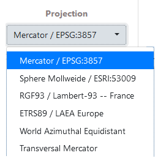
Example: several projections applied on the RICardo world trade map
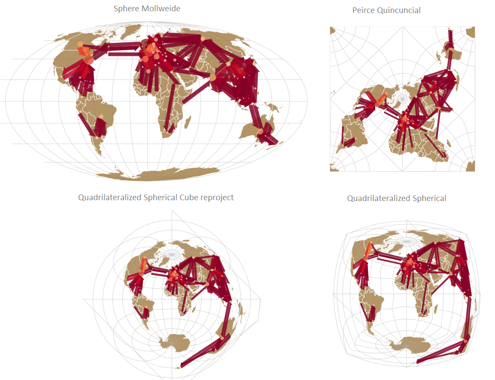
6.2 Geographical layers
The management of the map background is related to the geographic information. It can be accessed via the Layer button, and is composed of three sub-sections.
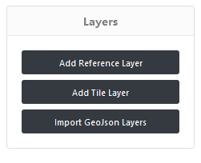
6.2.1 Add reference layer
Add reference layers consists in calling a remote geographic information layer from Natural Earth data features, to contextualize the flowmap.
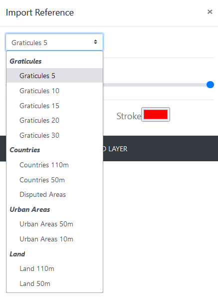
Selected reference layers are:
geographical graticules are grids at 5, 10, 15, 20 and 30° intervals. Includes WGS84 bounding box. See details…
Example: Add graticule layer 20° interval
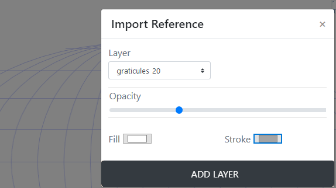
world’s countries divisions at spatial resolutions of 110 meters or 50 meters, and the disputed areas. See details…
Example: countries
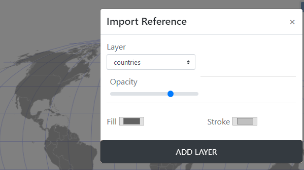
world urban areas (of dense human habitations) coverage derived from MODIS satellite, at spatial resolutions of 50 meters or 10 meters. See details…
world landscape based on lands including major islands. See details…
For all these layers, their fill and stroke can be defined by picking colors, then click on Add layer button.
6.2.2 Add tile layer
The Base type of tiles layers come from Open Street Map (OSM) tile server, CARTO DB and ESRI tile server.
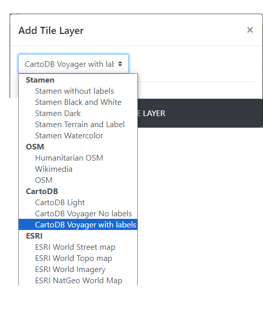
Examples:
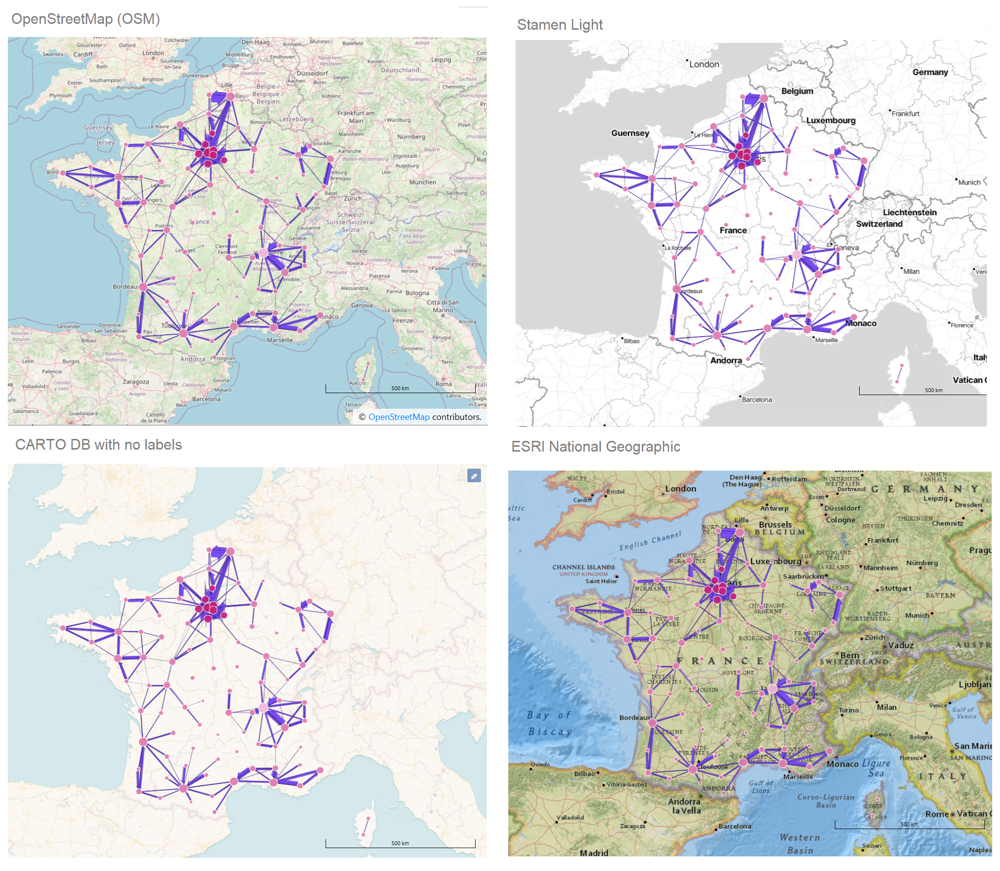
6.2.3 Add Geojson layer
Import Geojson is to load a personal vector layer.
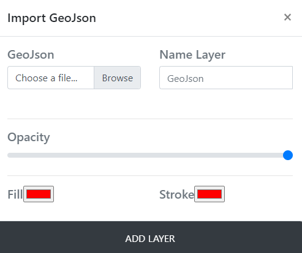
6.3 Layer management
Displaying geographic information layers adds layers in the Layer management section. Depending on their position, the added layers (hereby Land 110m and graticules 20) can hide the initial node and link layers, with the most recently added layers in the foreground.
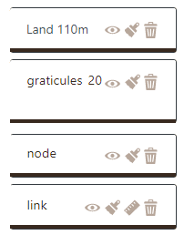
6.3.1 Changing the layer layout
To make the new layer visible in a correct order, you need to change the layout of the different layers, by modifying their order by drag & drop.
Click and hold on the link layer;
Drag and drop the link layer to the foreground;
Release the layer;
Repeat the same operation with the node layer if necessary.
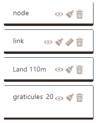
6.3.2 Manage the visibility of a layer
Differents icons are useful to manage the layers’ appearance.
Hide a layer
Show a layer (make it visible)
Delete a layer
Icons for modifying the design of a layer
Semiology parameters of flow features (nodes and links) : color, size, text, opacity.
Geometry parameters for changing links/arrows shape only. This is not available for nodes). It is possible to change their orientation, the type of link (curve, triange, …) and arrow head parameters.